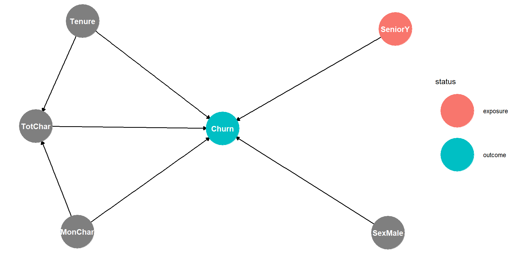
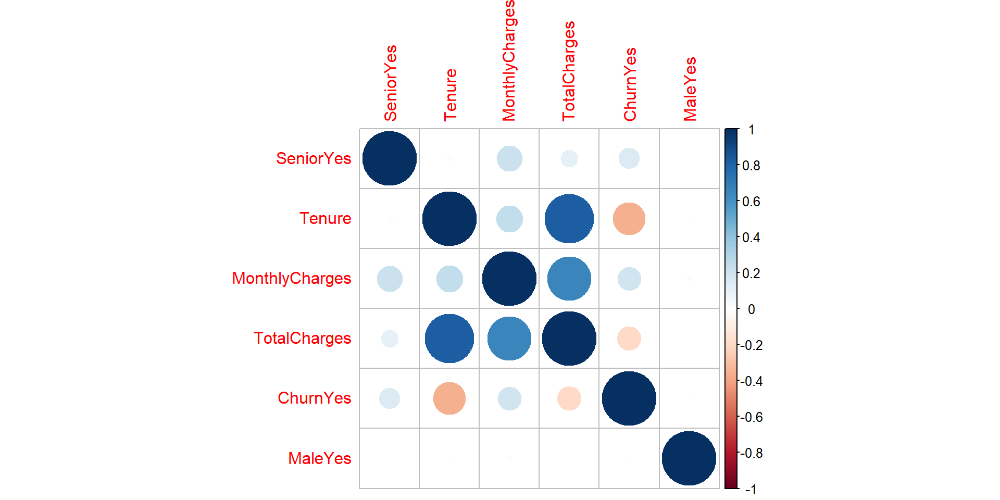

| Name | Income | Yacht |
|---|---|---|
| Jack | 45 | 1 |
| Sarah | 50 | 0 |
| Carl | 55 | 0 |
| Eric | 60 | 0 |
| Zoe | 67 | 0 |
| James | 250 | 1 |
| Enrico | 280 | 1 |
| Erica | 320 | 1 |
| Stephanie | 370 | 1 |
| Susan | 500 | 1 |
Multivariate Logistic Regression
What distinguishes data with a binary dependent variable (dummy variables) from data with a continuous dependent variable.
Why a linear regression (Linear Probability Model; LPM) is not suitable for estimating dummy variables
Why a Logistic Regression function is well suited to estimate dummy variables.
What is the difference between Odds and Probabilities
How to interpret the parameters of a Logistic Regression
| Name | Income | Yacht |
|---|---|---|
| Jack | 45 | 1 |
| Sarah | 50 | 0 |
| Carl | 55 | 0 |
| Eric | 60 | 0 |
| Zoe | 67 | 0 |
| James | 250 | 1 |
| Enrico | 280 | 1 |
| Erica | 320 | 1 |
| Stephanie | 370 | 1 |
| Susan | 500 | 1 |
Click on legend to show/hide graphs.
The data are already shown.
Activate the OLS regression line to see how data are approximated.
\[P=\frac{1}{1+e^{-(\beta_1* Inc + \beta_2)}}\]
\[P=\frac{1}{1+e^{-(\beta_1* Inc + \beta_2)}}\]
Click on legend to show/hide graphs.
50%-Level and Decision Boundary graphs are currently hidden
Adjust beta1 and beta2 to improve MSE of Logistic Regression
\[P=\frac{1}{1+e^{-(\beta_1* Inc + \beta_2)}}\]
Click on legend to show/hide graphs.
50%-Level and Decision Boundary graphs are currently hidden
Use 50%-Level and Decision Boundary to see predicted yacht ownership fot data
Assume a horse has a chance of \(40\%\) to end up in the first three and you bet on this. The probability for you to win are:
\[P=0.4\]
. . .
The Odds are the chance to win compared to the chance not to win:
. . .
\[ Odds=\frac{P}{1-P}=\frac{0.4}{1-0.4}=\frac{0.4}{0.6}=\frac{2}{3} \] The odds are two-to-three.
. . .
Remember for later: \[Odds=\frac{P}{1-P}\]
\[P=\frac{1}{1+e^{-(\beta_1\cdot x_i+\beta_2)}} \]
Take the reciprocal on both sides of the equation:
\[\frac{1}{P}=1+e^{-(\beta_1\cdot x_i+\beta_2)}\]
Subtract 1 on both sides:
\[\frac{1}{P}-1=e^{-(\beta_1\cdot x_i+\beta_2)}\]
Consider that \(-1=-\frac{P}{P}\):
\[\frac{1}{P}-\frac{P}{P}=e^{-(\beta_1\cdot x_i+\beta_2)}\] Simplify:
\[\frac{1-P}{P}=e^{-(\beta_1\cdot x_i+\beta_2)}\]
Take again the reciprocal of both sides:
\[\underbrace{\frac{P}{1- P}}_{Odds_i}=e^{\beta_1\cdot x_i+\beta_2}\]
Take the logarithm on both sides:
\[ \ln(Odds)=\beta_1\cdot x_i+\beta_2 \] If \(x\) changes by one unit then $ (Odds)$ changes by \(\beta_1\) — which is a relative (percentage) change.
Research Question:
Should seniors be treated differently when it comes to churn prevention?

library(tidymodels)
library(corrplot)
DataChurn=DataChurnOrg |>
select(Churn,Gender,SeniorYes=SeniorCitizen,Tenure,
MonthlyCharges, TotalCharges) |>
mutate(ChurnYes=ifelse(Churn=="Yes",1,0), Churn=NULL) |>
mutate(MaleYes=ifelse(Gender=="Male",1,0), Gender=NULL) |>
na.omit(TotalCharges)
corrplot(cor(DataChurn))
SeniorYes Tenure MonthlyCharges TotalCharges ChurnYes MaleYes
1 0 1 29.85 29.85 0 0
2 0 45 42.30 1840.75 0 1
3 0 22 89.10 1949.40 0 1
4 0 10 29.75 301.90 0 0
5 0 62 56.15 3487.95 0 1
6 0 13 49.95 587.45 0 1
Call:
glm(formula = ChurnYes ~ MaleYes + SeniorYes + MonthlyCharges +
Tenure, family = "binomial", data = DataTrain)
Coefficients:
Estimate Std. Error z value Pr(>|z|)
(Intercept) -1.831863 0.112173 -16.331 < 2e-16 ***
MaleYes 0.006935 0.074995 0.092 0.926
SeniorYes 0.642946 0.096203 6.683 2.34e-11 ***
MonthlyCharges 0.032216 0.001594 20.213 < 2e-16 ***
Tenure -0.057430 0.002104 -27.291 < 2e-16 ***
---
Signif. codes: 0 '***' 0.001 '**' 0.01 '*' 0.05 '.' 0.1 ' ' 1
(Dispersion parameter for binomial family taken to be 1)
Null deviance: 5699.5 on 4921 degrees of freedom
Residual deviance: 4369.7 on 4917 degrees of freedom
AIC: 4379.7
Number of Fisher Scoring iterations: 5 PredProb SeniorYes Tenure MonthlyCharges TotalCharges ChurnYes MaleYes
1 0.12533156 0 34 56.95 1889.50 0 1
2 0.10589948 0 16 18.95 326.80 0 1
3 0.10469235 0 69 113.25 7895.15 0 0
4 0.01547421 0 52 20.65 1022.95 0 0
5 0.07834285 0 71 106.70 7382.25 0 1
6 0.50948214 1 1 39.65 39.65 1 1
PredChurn
1 0
2 0
3 0
4 0
5 0
6 1Confusion Matrix: